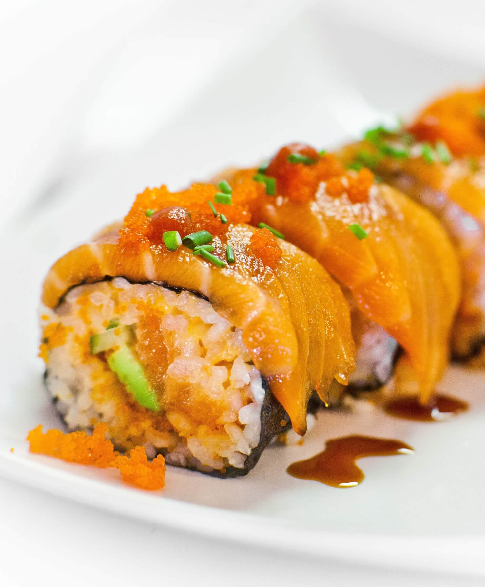

Spicy Salmon Roll

Description
These Spicy Salmon Rolls are so fun to make at home and if you're like me and my family and you are severely missing going out for sushi, let me tell you - these will fix you right up!
Ingredients
- 1 recipe sushi rice
- 8 oz imitation crab sticks
- 3 tbsp. Japanese mayonnaise
- 1 avocado ripe
- 1/2 english cucumber
- 8 sheets toasted nori
- Toasted sesame seeds
- Black sesame seeds
- 8oz raw atlantic salmon
- Spicy mayo
Steps
- Make the sushi rice according to the sushi rice recipe. I highly recommend using this rice cooker. Then let it cool. Note: my recipe makes 8 rolls. But you can cut this in half if needed.
- Now slice the salmon into strips 1/4 inch thick. TIP: only use farm-raised Atlantic salmon that has been previously frozen to prevent harmful bacteria. Once the salmon is cut, set it aside in the fridge.
- Finely chop 8 oz of imitation crab meat and place it into a bowl and mix it with 3 Tbsp of kewpie Japanese mayonnaise. Then set it aside.
- Then slice up 1 avocado and 1/2 of an English cucumber into strips.
- Now wrap your sushi mat in plastic wrap. This will make your life a lot easier when it comes to cleaning.
- Place 1 sheet of toasted seaweed on top of the sushi mat and cut off 1/4 of it with scissors. You don’t have to do this but I find that if you use the full sheet, you end up with too much rice vs filling.
- Now wet your hands in a bowl of water and grab a handful of rice and begin spreading a thin even layer of sushi rice on top of the seaweed. Be careful not to press on the rice too hard, or you'll end up with a mashed up mess. Continuously wetting your hands will prevent the rice from sticking to your fingers.
- Now sprinkle toasted white sesame seeds along with black sesame seeds on top of the rice. Then flip the entire sheet of seaweed over.
- Now, in the middle of the seaweed, add about 1 oz of the imitation crab meat mixture, a few strips of cucumber, two slices of avocado, and 1 strip of raw salmon.
- Now, this is the tricky part. While turning in the front of the nori with the sushi mat, slightly compress the inner ingredients. Keep rolling the sushi with the sushi mat, making sure to keep the roll tight.
- Place the sushi roll onto a cutting board and use a sharp wet knife, cut the sushi into 8 equal pieces. I usually wet the knife before each slice.
- Then top with spicy mayo and serve with soy sauce and wasabi.
Home